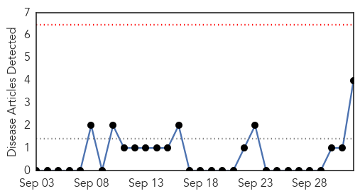
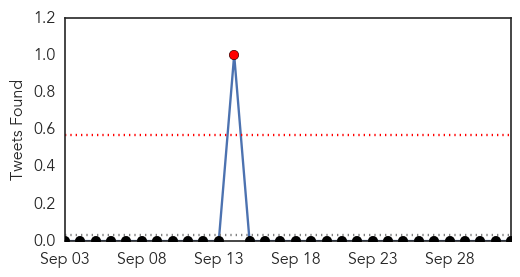
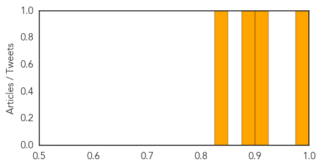
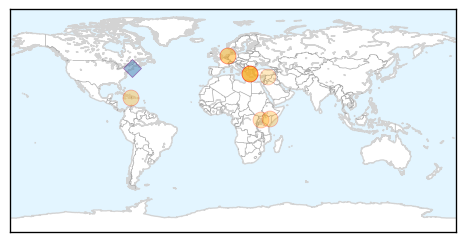

Chikungunya
30-Day Web Trend
0 alerts, 0 warnings

30-Day Twitter Trend
1 alerts, 0 warnings

Article Locations

Article Confidences
Top Articles:
- 0.977
- Gov’t dragging feet on hand foot mouth disease, says Opposition
- 0.914
- JLP Criticises Government For Response To Outbreak Of Hand, Foot And Mouth Disease
- 0.891
- Health ministry doesn't seem to be taking disease outbreak seriously
- 0.826
- Seiveright says St Thomas worst hit by hand, foot and mouth disease
Top Tweets:
-
No tweets found for Oct 02, 2015
Cholera
30-Day Web Trend
0 alerts, 0 warnings

30-Day Twitter Trend
1 alerts, 0 warnings

Article Locations
Article Confidences

Top Articles:
- 1.000
- Stories tagged with "Haiti"
- 0.992
- Greece urges health precautions after suspect cholera case on Kos
- 0.991
- Greece urges health precautions after suspect cholera case on Kos
- 0.965
- Greece urges health precautions after suspect cholera case
- 0.925
- Kenya - Cholera Outbreak (MDRKE035): Operations Update no.2 - Kenya
- 0.895
- Greece urges health precautions after suspect cholera case on Kos
- 0.863
- Gov’t Survives $3.8m Fine to South African Company
- 0.731
- Greece urges health precautions after suspect cholera case on Kos
- 0.710
- Migrants accused of bringing cholera to Kos as tourist gets disease
Top Tweets:
- 0.871
- RT: tbt Excellent infographic from on the cholera epidemic still raging in Haiti: https://t.co/CSFmQ76…
- 0.616
- RT: "Our collective sanctimony rings hollow when the shirks its undeniable resp. for spreading cholera in Haiti" StVince…
- 0.598
- ... for spreading cholera to Haiti, 2 the tune of 9,400 lives lost" at 15:20.